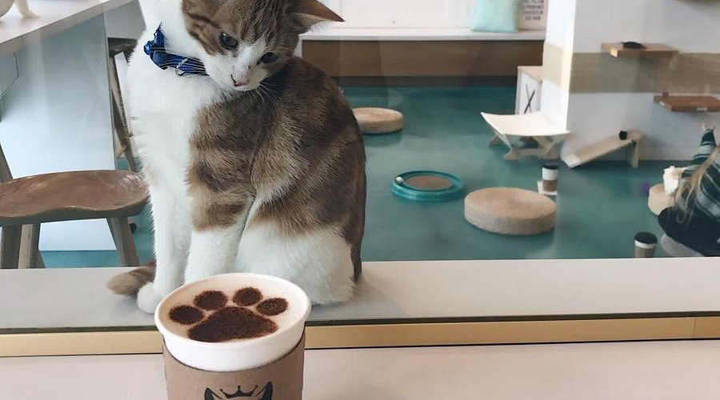
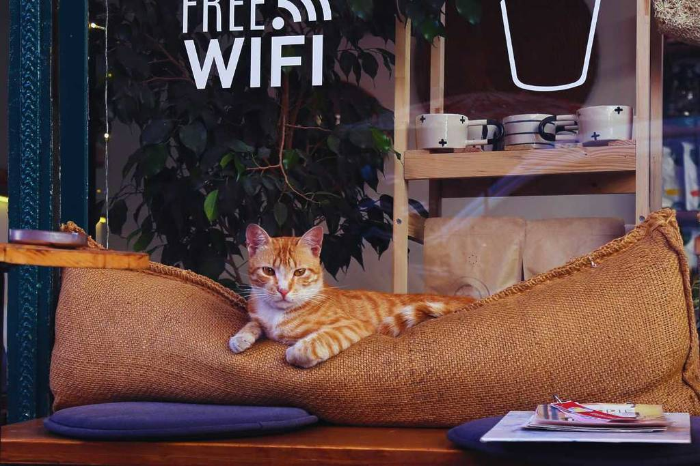
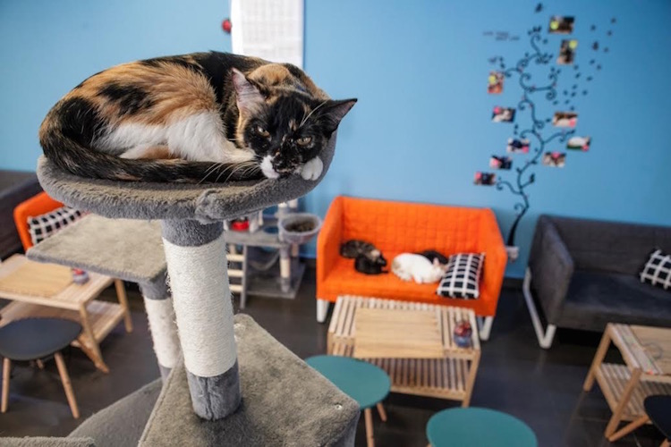
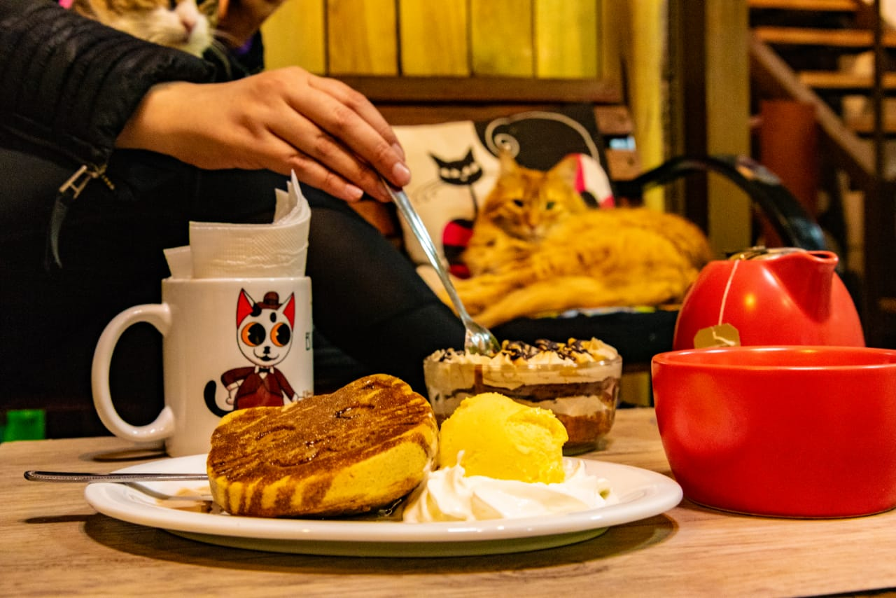
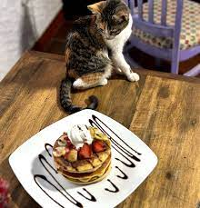

La Experiencia MichiMar
No es solo un café. Es un refugio frente al mar, una tarde con ronroneos, un lugar para disfrutar del presente.
¿Qué es MichiMar Café?
Somos una cafetería única ubicada frente al mar en Penco, donde los protagonistas son los gatos. Puedes venir a leer, trabajar o simplemente relajarte rodeado de nuestros adorables michis. Cada rincón está pensado para el confort de los visitantes y la felicidad felina.

Eventos Especiales
Tardes de lectura
Un libro, un café y un gato durmiendo al lado. ¿Qué más se puede pedir?
Clases de ilustración
Talleres mensuales para dibujar a nuestros gatos mientras disfrutas una bebida.
Celebraciones
Cumples, aniversarios o momentos especiales… ¡celebralos con nosotros!
Galería




¿Dónde estamos?
📍 Frente a playa Penco, Región del Biobío. Te esperamos todos los días con un café caliente y un gato ronroneando.
Volver al inicio